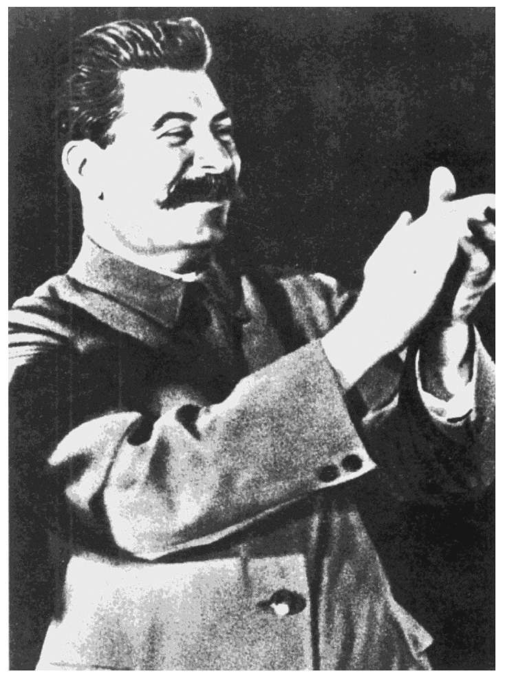
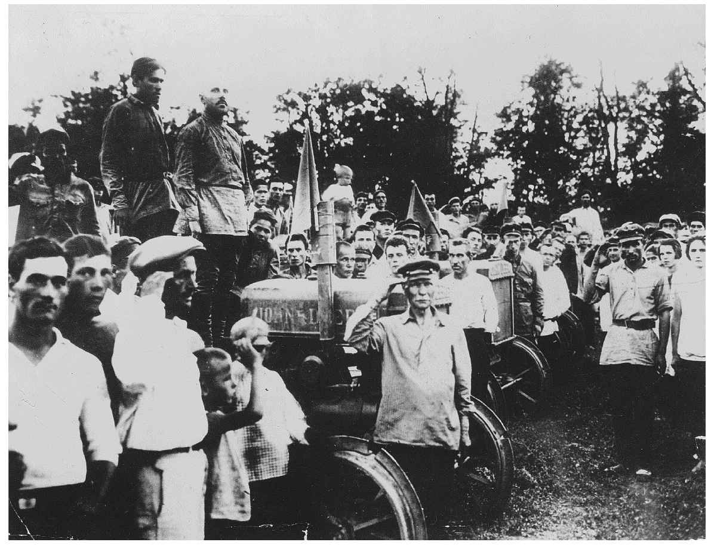

战时共产主义
布尔什维克一旦居于俄国主人的地位，就面临着挑战，要建立起新的社会主义社会，如他们久已宣传的那样。他们很快便发现，他们对迎接这一挑战毫无准备——过去的历史中没有任何模式可循。列宁本人就承认：“我们在夺取政权后便知道，不存在将资本主义制度具体改造成社会主义制度的现成方法……我不知道哪位社会主义者处理过这些问题……我们必须根据实验作出判断。”[1]
起初，几乎没有实验的机会，因为生存斗争比其他任何事情都重要。所谓“战时共产主义”盛行于1917年至1921年间；当时，为了向前线提供所需的物资和人力，采取了种种非常措施。战时共产主义的一个特征是对土地、银行、对外贸易和重工业实行国有化。另一个特征是强行征用供养士兵和城市居民所必需的剩余农产品。原先的计划是向农民提供工业制成品作为补偿，但事实证明这是不可能的，因为当时几乎所有的工厂都在为前线生产。
内战的结束意味着不再需要“战时共产主义”这种权宜制度，于是它立即被摒弃了。农民们拿起武器，反对无偿的征收。与此同时，这个国家的经济也已陷于瘫痪状态，这主要是由于1914年至1921年间接连不断的战争。工业已下降到战前水平的10%，粮食产量从1916年的7400万吨下降到1919年的3000万吨。最大的灾难是1920年和1921年的全国性旱灾，它造成了俄国历史上最严重的饥荒。数百万人死于饥饿，更多的人只是靠着美国救济署提供的救济品才活了下来。
新经济政策
注重实际的列宁认识到让步是不可避免的，因而于1921年采取了“新经济政策”（NEP），这一政策允许局部地恢复资本主义。农民们被准许在公开市场上出售他们的农产品。私人可以经营小商店和小工厂。农民和新商人都能雇佣劳力，并能保留他们在经营中获得的利润。不过，列宁设法使国家控制了土地所有权，控制了他所称的“制高点”（银行业、对外贸易、重工业和运输业）。对列宁来说，新经济政策并不意味着社会主义在俄国的结束，而是暂时的退却，“后退一步为的是前进两步”。
新经济政策成功地应付了数年战争留下的直接危机。到1926年，工农业产量已达到1914年以前的水平，但自1914年起，人口已增加了800万，因此，仍未达到战前人均水平。布尔什维克领导人面临着的基本问题是如何实现他们所计划的“前进两步”。在1924年逝世前不久，列宁似乎已经认定继续实行新经济政策是为社会主义指出的最佳之路。列宁逝世后，尼古拉·布哈林是新经济政策最杰出的倡导者。布哈林个性温和、热情，对体育、科学、艺术和政治都感兴趣。他相信新经济政策的市场关系能“发展为社会主义”。他支持这一路线，因为它几乎不需要强制，而且注重他所钟爱的原则：“我们的经济是为消费者存在，而不是消费者为经济存在。”[2]
尽管布哈林是列宁最中意的布尔什维克领导人，也最受欢迎，但他的观点却没有占上风。他不是“官僚结构的建造大师”[3]斯大林的对手。斯大林清楚地看到，共产党是这个国家唯一的实权力量，他利用党的总书记身份使自己成为党和国家的主人。在经过相当大的动摇之后，斯大林决定放弃新经济政策，支持工业和农业都由莫斯科控制和管理的中央集权经济。这不仅意味着政府对工厂继续经营管理——像战时共产主义时期的情况一样——而且意味着政府通过农民土地集体化对农业进行控制。
苏联计划经济
1928年，斯大林开始实行由国家计划委员会制订的一系列五年计划中的第一个。国家计划委员会的成员由政府任命，他们根据莫斯科提出的总方针和全国各地送来的统计资料草拟每个计划。第一个五年计划虽然与后来由计算机制订的计划相比简单原始，但也有三大卷，达1600页之多。
在农业方面，五年计划要求土地集体化。很多农民——特别是富农——反对集体农庄，因为他们必须以与几乎一无所有的贫农相同的条件加入农庄。有时候，富农们会烧毁集体农庄的房屋，毒死耕牛，散布谣言吓走其他农民。苏联政府对此进行了报复：将成千上万户富农赶出村庄，把他们关进监狱和西伯利亚劳动营。最后，尽管有许多人付出了生命的代价，政府仍能独行其是。到1938年时，几乎所有农民的田产都被合并到24.24万个集体农庄和4000个国营农场中去了。

图265 列宁的接班人约瑟夫·斯大林。
虽然苏联政府成功地消灭了几乎所有的私人农场，但集体化农业的产量却被证明是非常令人失望的。苏联农场用比美国农场多出50%的土地耕种，用10倍的人力劳作，但其产量却只有后者的四分之三。造成这一悬殊的一个原因在于，与美国的气候相比，苏联的气候对农业要不利得多。另一个原因是苏联政府对发展工业更感兴趣，因而使农业处于严重匮乏的状态。苏联农民在每英亩土地上使用的机械和肥料只相当于美国人的一半。不过，苏联农业的主要困难还是来自莫斯科的极度控制。苏联官员告诉农民们种什么，何时种，何时育苗，施多少肥料，何时收割。而农民们则宁愿在自己的私人土地上辛勤劳作，因为在那里，他们可以按照自己认为的最佳方式耕种，然后在公开市场上以他们所能得到的最高价格、而不是以政府为集体农庄农产品制定的低价格出售他们的任何产品。因此，私人土地虽然只占总耕地面积的3%到5%，却生产了25%到30%的苏联农产品。

图266 苏联农民参加群众大会，庆祝新买的拖拉机到达他们的集体农庄。
与农场不同，斯大林计划经济下的大多数工厂都不是作为合作社经营的，而主要是归政府所有和经营的。除了为工业提供必需的资本外，政府还为促进最高产量而采取了“胡萝卜加大棒”的做法。工人和经理都必须完成某种定额，违者将被罚款或开除。另一方面，如果他们超额完成定额，就会得到奖金。工会虽可以成立并得到承认，但并未获得罢工的基本权利。苏联工业迅速增长，因为政府提取了大约三分之一的国民收入用于再投资；相比之下，美国则只提取了六分之一。而且，在计划经济中，政府能够随意分配投资资本。因此，苏联工业总产品中大约有70%是资本货物，30%是消费品；而在美国，这一比例则大致相反。到1932年第一个五年计划结束时，苏联的工业产量已从世界第五位上升到第二位。这一非凡的激增不仅是因为苏联生产率的提高，而且还由于大萧条所造成的西方生产率的下降。而且，苏联国民生产总值（GNP）——其中除了工业产量外还包括落后的农业产量——在1928年至1952年这25年中增加了三倍半，这一发展速度超过了同一时期其他任何国家。从世界实力平衡的角度来看——这是斯大林主要关心的——苏联在全球工业总产量中所占的份额从1921年的1.5%增长到了1939年的10%和1966年的20%。
这里应该强调的是，苏联经济发展的代价是由苏联公民来承受的，他们被迫为将来而努力工作，忍受当下的贫困，而不管他们自己的愿望是什么。消费品不仅匮乏，而且昂贵并质量低劣。苏联国民生产总值一直是美国国民生产总值的46%至48%。按人均计算，苏联国民生产总值大约只是美国的五分之二，因为苏联的劳动力比美国多四分之一。
对世界历史的意义
对苏联人民来说，五年计划是一件祸福兼有的事情。从积极的一面来看，它们使国家在经济和军事上强大起来，从而大大有助于在第二次世界大战中打败希特勒。五年计划还把国家从一个落后的社会变成一个现代社会。识字率方面，1897年为28.4%，1926年为56.6%，经过若干五年计划，提高为1939年的87.4%和1959年的98.5%。在医疗卫生方面，在1913年至1961年间，外科医生的人数从2.32万人增加到42.57万人；预期寿命从32岁上升到69岁；婴儿死亡率从273‰下降到32‰。同样，在社会服务方面，五年计划则为苏联公民提供了免费医疗、养老金、疾病和残疾津贴、产假、带薪休假和儿童补助等。
但是，俄国人民也忍受了五年计划所带来的负面经历。其中最具破坏性的是布尔什维克与农民联盟的终结，而正是这一联盟才使1917年的革命成为可能。土地集体化期间的野蛮压制是无法让人很快忘掉的。此后，农民们不再与政府合作，他们将强加给他们的集体农庄视为外来的东西——从而形成了他们在自己小块土地上的高生产率与在集体农庄土地上的低生产率的鲜明对照。农业上的低生产率反过来又损害了苏联工业的成就。由于农业的产出不足以资助工业化所需的消耗，工厂工人也受到了榨取，被迫为一系列五年计划付出高额的代价。当苏联政府每年拿出国民收入的三分之一用于再投资，便意味着低工资和消费品短缺。一位苏联工人的反应很典型：“他们假装在付给我们工资，于是我们也假装在工作。”
五年计划不仅对苏联而且对世界都产生了混杂的影响。这一影响对西方世界和对不发达国家是不同的。西方人起初怀疑苏联为新社会制订的计划，许多人都认为它们一定会失败。随着一系列五年计划的展开，怀疑为真正的兴趣所代替。但是，那些有足够兴趣访问苏联的西方人通常却又都没有留下深刻的印象，如果不说是幻灭的话。他们对苏联人的褴褛衣衫、单调食物、糟糕住房和稀缺消费品感到震惊。反映在一党制政治结构中的个人自由缺乏、工会受束缚、教育受统一管理和所有交流媒介受严格控制同样使他们感到震惊。尽管苏联的五年计划取得了成就，但苏联社会在大多数西方人看来，却似乎并不是一个值得效仿的社会主义乐园。不过另一方面，大多数西方人也都承认，没有五年计划下的工业增长，苏联就不可能为在第二次世界大战中打败希特勒做出那么大的贡献。
不发达世界中前殖民地各民族的反应则不同。对他们来说，苏联在30年内成功地将自己从一个落后农业国转变成世界第二大工业、军事强国。使这一惊人变化成为可能的种种制度和技术让这些民族极为关注。同样值得注意的是，苏联既是一个欧洲大国，也是一个亚洲大国。它的边界从朝鲜起，沿中国黑龙江、蒙古、中国新疆、阿富汗、伊朗一直延伸到土耳其。在漫长边界的另一边，很少有与苏联中亚诸共和国所取得的巨大物质成就相类似的成就，包括灌溉工程、纺织厂、机械厂、公共医疗卫生服务和教育计划，后者使识字率由1914年的约2%上升到1940年的75%和1960年的90%以上。
第二次世界大战以后，这一苏联实验的混杂影响变成了几乎完全负面的影响。我们将会看到（见第四十四章第三节），近几十年来，苏联的计划经济渐渐地落在了西方市场经济的后面，而个人的权利和自由则因仍然明显缺乏。结果也就导致了苏联这一超级大国的解体和消失，于20世纪90年代初为独立国家联合体所代替。